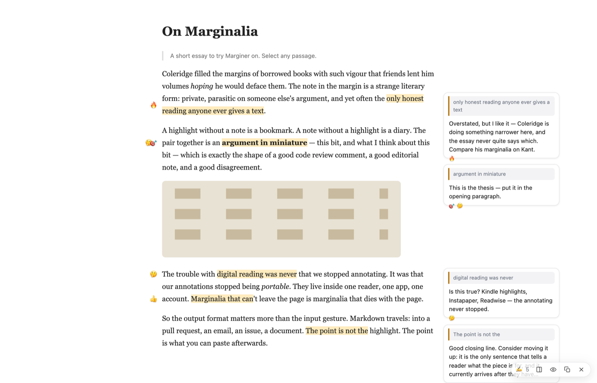
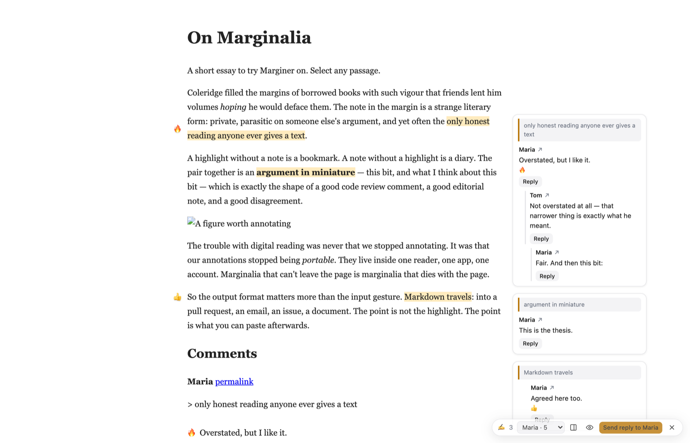
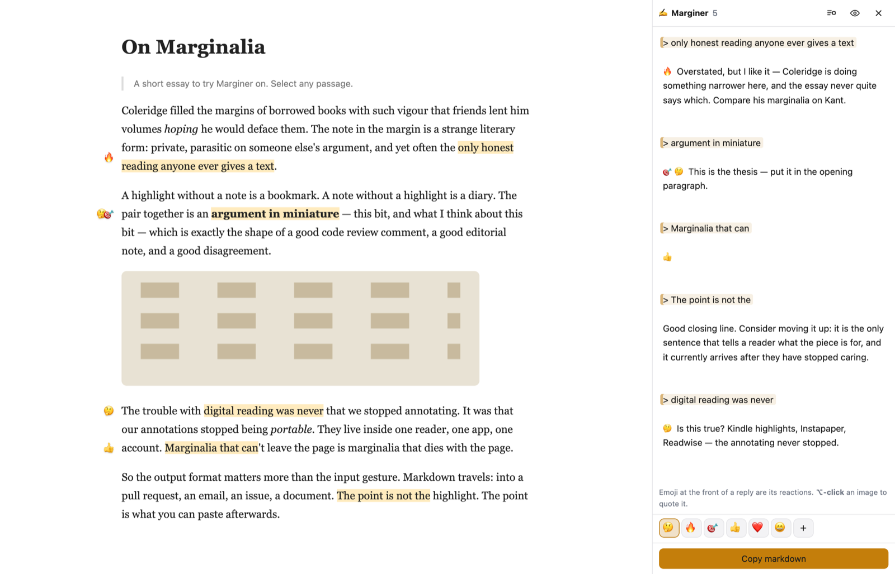

Select text on any web page, add a note or a reaction, and walk away with markdown you can paste into a comment, a pull request, an email. On Substack, the comment is the shared annotation: anyone with Marginer sees it on the page, and replies in place.

The note panel opens on the selection. Type a note, tap a reaction, or type an emoji at the front — same thing.
Your notes are one markdown document: > quote lines with the reply beneath each. Paste it into the post's comment box.
Anyone with Marginer on that page sees the comment's quotes highlighted, with the notes beside them — and can reply to each, in the comments.
The markdown is the storage format. There's no database and no account; a page's notes are one string, and that string is what gets saved, what re-anchors on the next visit, and what lands on your clipboard:
> the only honest reading anyone ever gives a text
🔥 Overstated, but I like it. Compare Coleridge on Kant.
> Markdown travels
👍
✍️ marginer.app — see these highlights on the pageNo server of ours is in the loop. The post's own comments are read (on Substack, through the same JSON the page itself loads), and every comment whose quotes are found in the article becomes a thread you can show on the page. The site keeps the comments; its identity, moderation and notifications apply. A hand-typed > quote reply counts just the same.

Replies are written the way email has always quoted: the passage nested under the words being answered.
> > the only honest reading anyone ever gives a text
> Overstated, but I like it.
I don't think it's overstated — that narrower thing is exactly what he meant.
Three ways to run the same tool. Notes never leave your browser.
Drag the button to your bookmarks bar; click it on any page. The whole tool rides inside the bookmark, so nothing is fetched and nothing is installed.
✍️ Marginer Sites with a strict Content-Security-Policy refuse bookmarklets. Substack doesn't; GitHub does.With Tampermonkey or Violentmonkey, revisiting an annotated page brings your highlights back on its own, with a pill showing the count. ⌘⇧U opens it anywhere.
Install the userscriptSurvives any CSP. Not on the Web Store yet — load it unpacked:
git clone https://github.com/huttj/marginernpm install && npm run buildchrome://extensions → Developer mode → Load unpacked → extension/| Bookmarklet | Userscript | Extension | |
|---|---|---|---|
| Install | drag a link | Tampermonkey | load unpacked |
| Shows a page has notes | on click | yes | on click |
| Works on strict-CSP sites | no | yes | yes |
| Notes stored in | site localStorage | site localStorage | chrome.storage |
Nowhere. They're stored in your browser, keyed by the page's URL, as the same markdown you can copy. Marginer has no server and no accounts. The only thing that leaves your browser is what you paste into a comment yourself.
Because the comment box already exists, the author already reads it, and everyone can read the notes as plain text whether or not they have the tool. Marginer only adds the in-place view. That also means the site's own rules apply: identity, moderation, notifications.
Highlighting and notes work on any page. Reading other people's comments in place needs an adapter for the site's comment system; Substack has one. Others are welcome — see the repo.
A note whose quoted text can no longer be found isn't thrown away: it's marked as unanchored, still shows in your document, and still exports.
No. Hypothesis keeps annotations on its server, behind its accounts, invisible without the tool. Marginer's shared annotations are ordinary comments on the site, readable by anyone; the tool is just a better way to read and write them.